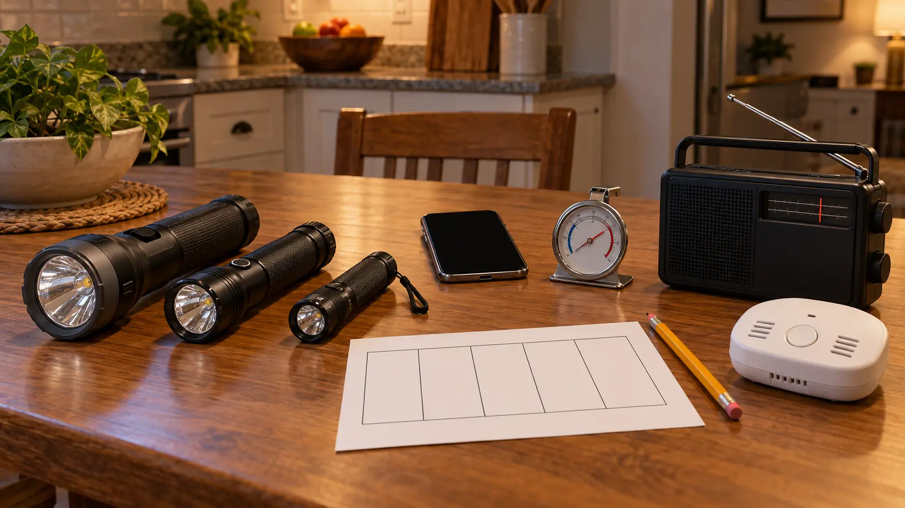

Light
Write where two working flashlights live and who carries one to the meeting point. Do not plan around candles.
AT HOME · NO-SPEND · EXPLORATION
Do the boring decisions while the lights are on. Kids find the flashlights and read the card; adults own electricity, fuel, generators, appliances and every real emergency call.

Most family outage plans are shopping lists. This one is a 20-minute behavior test using what the household already owns. Can everyone find safe light? Can an adult record the outage start time? Can the family keep the refrigerator closed? Can children repeat the carbon-monoxide rule without being asked to operate anything?
The finish line is one five-box card: light, phones, cold food, CO, medical/weather. Add one adult stop rule. Keep it near the household plan, not on an appliance or electrical panel.
CDC and Ready.gov advise keeping doors closed. An unopened refrigerator keeps food cold for about four hours. A full freezer holds temperature for about 48 hours; a half-full freezer for about 24 hours. Those are planning windows, not permission to keep every item. Use appliance thermometers, current official guidance and the exact food condition. When in doubt, throw it out. Never taste food to decide whether it is safe.
Keep the card simple: write the start time, keep doors closed, use a thermometer, follow the current discard chart. Do not make a school-age child responsible for food-safety decisions.
CDC says generators, grills and similar fuel-burning devices must not be used inside a home, basement, garage or carport or near openings. Ready.gov says generators should be used outdoors and at least 20 feet from doors, windows and vents. Follow the manufacturer’s instructions and local law. This page does not teach generator connection, transfer switches, fuel storage, extension-cord sizing or electrical installation; a qualified electrician handles permanent power connections.
Never heat a home with a gas oven. Never run a vehicle in a garage. Carbon monoxide has no warning smell that makes an unsafe setup acceptable. Install and maintain alarms according to the manufacturer and current code; press test buttons only as directed. If an alarm sounds or people develop headache, dizziness, weakness, nausea, vomiting, chest pain or confusion, get to fresh air and call 911.
Do not buy a generator, fuel container, transfer device, heater, alarm or mystery emergency kit because this drill exposed a gap. Define the gap first, then use the exact manufacturer, utility, code official or qualified technician guidance. The family lighting guide separates hands-free, handheld and area light. The power-bank guide handles phone compatibility and charging limits. The NOAA weather-radio guide compares SAME, basic and hand-crank categories without pretending a radio replaces alerts.
Five-minute version: each child finds one flashlight, everyone says the CO sentence, and an adult writes the outage start-time rule. Noise-sensitive child: do not test the alarm during the family drill; follow the device instructions at a planned time and prepare hearing protection or distance as appropriate. Anxious child: keep the lights on, call it a household helper practice and stop after one success. Mobility limit: stage reachable light and communication on the actual route used. Active storm: do not rehearse—monitor alerts and follow the real plan.
Skip during an active outage, storm warning, medical event or household conflict. Skip any step that would require a child to enter a basement, garage, utility room or dark stairwell alone. A household with complex medical equipment, a standby generator, solar-plus-storage, well pump, electric heat or other critical systems needs device-specific plans from qualified professionals; this page is only the family behavior layer.
Reviewed November 1, 2026 using Ready.gov power-outage guidance, the CDC’s carbon-monoxide guidance and CDC food-safety guidance after an emergency. The five-box card, timed drill, child sentence and reset sequence are independent editorial adaptations—not electrical, medical, food-safety or generator-installation instructions. No affiliate links are attached. Report corrections through About.
MAKE THE WEEK COUNT
Build the plan your family can finish well, then leave enough energy for the next part of the day.
More family plans